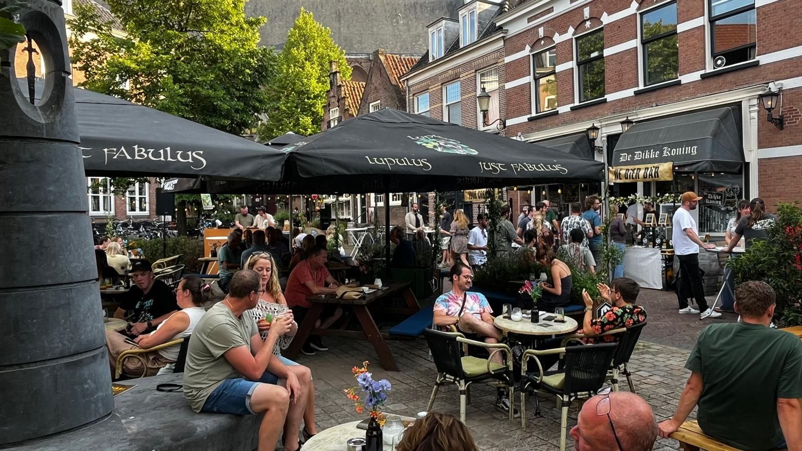
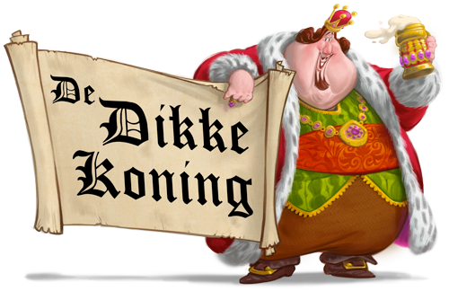
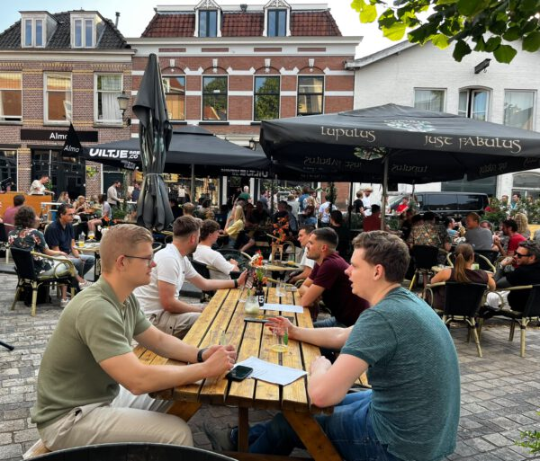
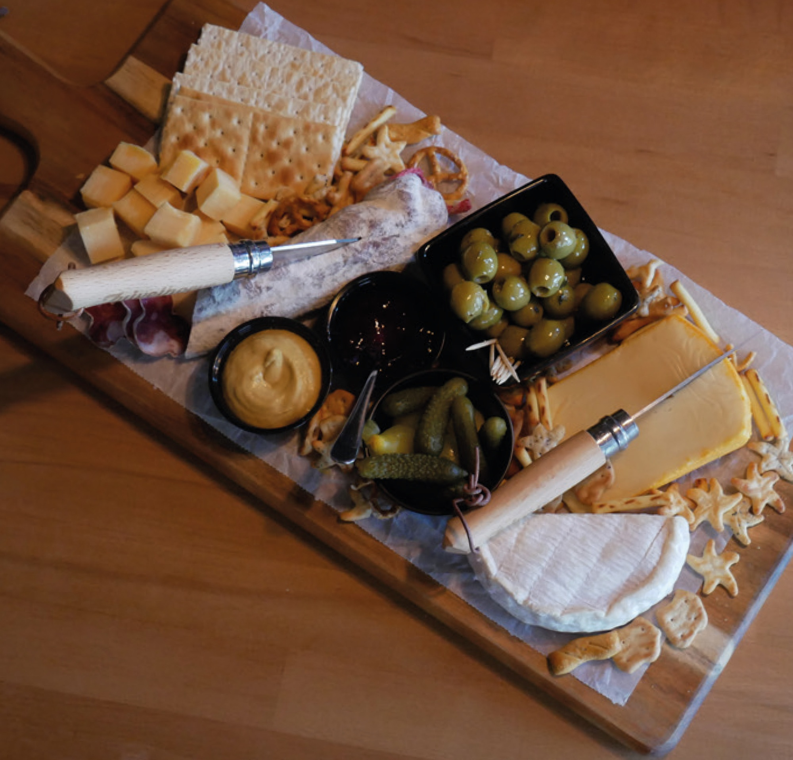

Surprise Proeverij
Laat je verrassen.


Voor de beginnende bierdrinker, of de ervaren proever. Wij hebben altijd iets nieuws.
Appelmarkt 18, Amersfoort
Op de Appelmarkt in Amersfoort vind je ons café, waar alles om bier draait. Meer dan 600 soorten, van bekende klassiekers tot flesjes en blikken die je nog nooit hebt gezien.
Twijfel je wat je wilt? Ons personeel kent de kaart door en door en denkt graag met je mee, of je nou elk weekend proeft of voor het eerst iets anders wilt dan een pilsje.
Bij het bier serveren we snacks die daar goed bij passen. En tot 20:00 uur serveren we, samen met Pannenkoekenhuys Den Potsenmaeker, verse pannenkoeken. Lekker voor tussendoor, als avondeten en inclusief bieradvies.
Kom langs op de Appelmarkt. We schenken je graag iets nieuws in.

Meer dan 600 bieren, en de wisseltaps veranderen steeds. Daarom houden we de actuele voorraad en de wisseltaps bij op Untappd: zoek daar op De Dikke Koning.
Weet je niet waar je moet beginnen? Vraag het aan de bar. Wij denken graag met je mee.
Nieuw van de tap
Guinness met MicroDraught, de enige in Amersfoort.
Bij onze bieren serveren we snacks die daar goed bij passen.

Op dinsdag, woensdag, donderdag en zondagmiddag kun je bij ons een tafel reserveren voor 2 tot 8 personen. Kom gezellig borrelen, boek een van onze bierproeverijen of ontdek de themaproeverij van het seizoen. Zo weet je zeker dat je tafel voor je klaarstaat.
Laat je verrassen.
Voor de liefhebber van traditie.
Het beste uit eigen stad.
De zondagmiddag zoals hij bedoeld is: een gereserveerde tafel met een spelletje en de Plank van de Koning.
Jij regelt de tafel, wij de rest.
Dat kan natuurlijk altijd. Vaak is er ruimte, en anders zoeken we samen naar een oplossing.
Heb je iets te vieren, zoals een verjaardag, of heb je speciale wensen? Laat het ons weten, we denken graag met je mee.
Of zoek je iets anders dan onze vaste arrangementen? Stuur dan een mailtje naar info@dedikkekoning.nl, dan kijken we samen wat er mogelijk is.
Tap takeovers, bokbierfeesten en het plein vol muziek. Dit organiseerden we dit jaar. Nieuwe activiteiten volgen: houd Instagram en de nieuwsbrief in de gaten.
8 okt 2026
16:00 - 23:59
De blaadjes vallen, de temperaturen dalen en de bokbieren staan koud. HopBokken is terug op de Appelmarkt! Na het succes van de eerste editie gingen we een stapje verder: vorig jaar waren het er 100, dit jaar stonden er maar liefst 101 verschillende bokbieren klaar. Met muziek van Hops 'n Drops en eten van Freshsteezz BBQ.
12 sep 2026
13:00 - 16:30
De binnenstad van Amersfoort stond in het teken van het Amateurkunst Festival, ook op de Appelmarkt. Op het plein voor De Dikke Koning genoot je de hele middag van live muziek en een gezellige festivalsfeer, vanaf ons terras.
4 - 6 sep 2026
Drie dagen feest bij De Dikke Koning. We maakten van het plein een plek waar bier, muziek, BBQ en het verhaal van Amersfoort samenkomen, samen met Rock City Brewing, Mirakel Brouwerij en HOP. Met op vrijdag een Rock City Tap Takeover, op zondag een bierproeverij van Bierwinkel HOP en filmvertoningen van het Mirakel van Amersfoort.
Wat betekent NEIPA? Wat is een STOUT? Is MEDE echt bier?
Speciaalbier is een wereld vol verhalen, smaken en ontdekkingen. Achter ieder bier zit een stijl, een brouwerij en een eigen karakter. Van klassieke Belgische bieren tot moderne craftbieren waarin brouwers experimenteren met nieuwe ingrediënten en technieken. Bij De Dikke Koning houden we ervan om die wereld te ontdekken en te delen.
Nieuwste bierweetje, 20 november 2026
Wijn van gerst, en dat mag je letterlijk nemen
Barleywine. Gerstewijn. De naam belooft iets wat het bier ook echt waarmaakt: dit drink je niet zoals een gewoon biertje. Dit drink je zoals een glas port of een goede whisky. Langzaam, en liefst met een stoel erbij.
Het eerste wat opvalt is de kleur. Ergens tussen koper, amber en diep mahonie. Weinig schuim, en wat er is zakt snel in. Logisch: met zoveel alcohol blijft een schuimkraag niet lang staan. Want ja, dat alcoholpercentage. Een barleywine zit meestal tussen de 8 en 12 procent. Uitschieters gaan nog hoger.
Steek je neus in het glas. Je ruikt karamel, toffee, gedroogd fruit. Rozijnen, vijgen, soms pruimen. Bij een Amerikaanse versie komt daar nog een flinke lading hop bij: dennen, citrus, iets harsigs.
Vol. Stroperig bijna. Zoet in het begin, daarna warmte van de alcohol, en aan het eind een bittertje dat alles weer in balans brengt. Hoe meer hop, hoe droger de afdronk. En dan het mooie: de tweede slok smaakt anders dan de eerste. Een barleywine verandert als hij warmer wordt in het glas. Neem er dus rustig de tijd voor.
Uit Engeland. In de achttiende en negentiende eeuw lagen de Engelsen regelmatig met Frankrijk in de clinch. Franse wijn drinken was dus niet zo patriottisch. Rijke landgoederen brouwden daarom hun eigen sterke bier om op te slaan en bij speciale gelegenheden te schenken. Een soort Engelse wijn, maar dan van gerst.
De naam barleywine kwam pas later op de etiketten. In de jaren zeventig pikten Amerikaanse brouwers de stijl op en gaven er hun eigen draai aan, met veel meer hop. Sindsdien heb je grofweg twee smaken: Engelse barleywine (moutig, zoet, veel karamel en gedroogd fruit) en Amerikaanse barleywine (hoppiger, bitterder, wat droger).
Allebei kan. Een barleywine is een van de weinige bieren die echt beter kan worden met de jaren. De scherpe randjes slijten eraf, de hop zakt weg en er komen tonen bij van sherry en noten. Sommige liefhebbers kopen er twee: één om nu te drinken, één voor over een paar jaar. Leuk om te vergelijken.
Blauwe kaas. Stilton als je het klassiek wilt houden. Of een dessert met toffee of karamel, zoals sticky toffee pudding. En eerlijk: gewoon niks erbij, aan het eind van de avond, werkt ook prima. Schenk hem niet te koud, rond de 12 tot 14 graden, in een cognacglas of een tulp.
Het is herfst, het wordt kouder. Precies de tijd voor een barleywine. Vraag aan de bar wat we op dit moment hebben. En deel hem gerust met iemand, want met een fles van 10 procent heb je er samen meer plezier van.
Medewerker Biercafé De Dikke Koning. Ben jij gezellig, gastvrij en heb je een voorliefde voor speciaalbier?
Stuur je motivatie en cv naar info@dedikkekoning.nl.
Biercafé De Dikke Koning
Appelmarkt 18
3811 CT Amersfoort
| Maandag | Gesloten |
|---|---|
| Dinsdag | 15:00 - 00:00 |
| Woensdag | 15:00 - 00:30 |
| Donderdag | 15:00 - 00:30 |
| Vrijdag | 13:00 - 01:30 |
| Zaterdag | 13:00 - 01:30 |
| Zondag | 13:00 - 21:00 |